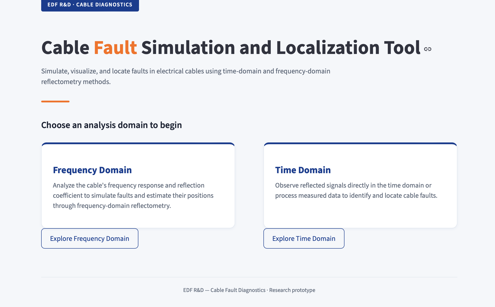
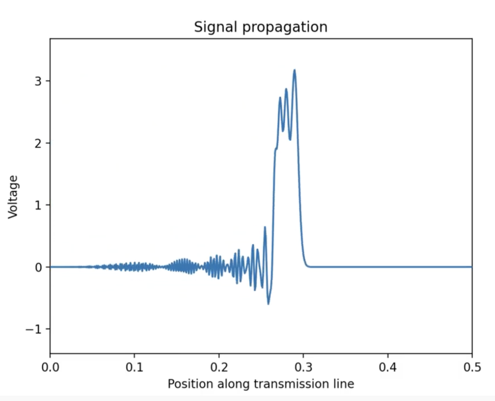
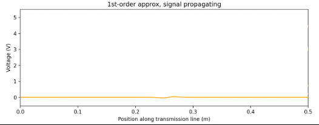
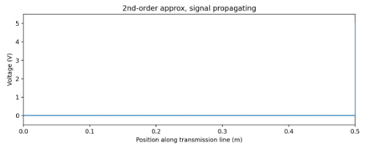
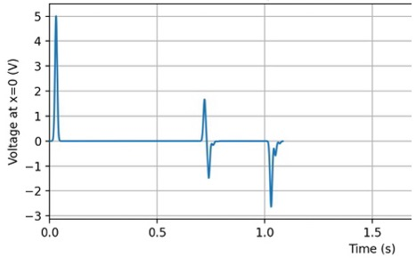
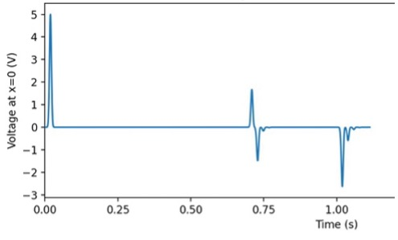

Research project · EDF R&D
Finding a fault in a buried cable by listening to its echo.
A cable can run for kilometres underground. When something goes wrong in it — corrosion, a crushed section, an animal through the insulation — the fault is invisible. Reflectometry finds it by injecting a pulse and reading what comes back.
- Context
- Bachelor of Global Engineering
CentraleSupélec × McGill - Partner
- EDF R&D
Supervisor: Susana Naranjo Villamil - Team
- Benjamin Dieu, Lina Skik,
Hana Toumi and myself - Stack
- Python, NumPy, SciPy,
Matplotlib, Streamlit

The problem
Instruments that do reflectometry exist, but they are expensive and their waveforms need a trained eye. There was no accessible way to simulate a fault, watch how the signal behaves, and compare detection methods before committing to hardware. EDF also needs large labelled datasets to train fault-diagnosis algorithms, and a simulator is a natural way to produce them.
So the question we set ourselves was less about accuracy alone and more about both at once: can a tool built on transmission line theory localize faults reliably and stay usable by someone with no signal processing background?
Localization error relative to cable length, consistent across fault types and positions, in both the time and frequency domains.
Starting from the physics
Once a cable is long compared to the signal wavelength, it stops behaving like a component and starts behaving like a medium: different points along it sit at different phases at the same instant. The line is cut into infinitesimal segments, each carrying four per-unit-length parameters — resistance, inductance, capacitance, conductance. Applying Kirchhoff's laws to one segment and shrinking it gives the telegrapher's equations.
Everything downstream comes from these two. A fault is nothing more than a local deviation of R, L, C or G — which shifts the characteristic impedance, and therefore sends part of the wave back.
At any discontinuity, the fraction reflected is set by the impedance mismatch alone:
Zero for a matched load, +1 for an open circuit, −1 for a short. This single number is what the whole diagnostic rests on.
Time domain: watching the pulse travel
The grid has rules
A finite-difference scheme only behaves if the steps are chosen properly. Two constraints govern the time step, and the tool enforces both rather than trusting the user: the signal must not cross more than one cell per step, and the sampling must resolve the highest frequency in the pulse.
The tighter of the two is taken. Ignore them and the solution does not degrade gracefully — it diverges.

Why a second-order scheme was needed
The first-order scheme treats the wave as constant within each cell. That approximation has a visible consequence: it produces a reflection at a perfectly matched load, where physics says nothing should come back. On a tool whose entire job is to interpret reflections, an artefact that looks exactly like a fault is not acceptable.
Evaluating the current at half-integer points in both space and time removes it. Same pulse, same matched load, both schemes:


The first-order solver is kept in the repository anyway. It is the version that made the second one possible, and it is far easier to read.
Turning an echo into a distance
The measured signal is the voltage at the injection point: the outgoing pulse, then whatever returns. Reflections are isolated by thresholding and segmenting the trace into events, and three methods then convert an event into a position.
- Direct wave speed. Round-trip time divided by two, times the propagation speed. Simplest, and assumes the fault does not change that speed.
- End-reflection calibration. The echo from the far end is identified, and every other reflection is expressed as a ratio of it. This calibrates against a measured echo instead of a nominal speed, which absorbs discretization error.
- Entry and exit pairing. A fault of finite length reflects twice — once going in, once coming out. Matching the two gives the fault's physical extent, not just its position. Later echoes spaced at the same interval are recognized as internal reverberations, so they are not counted as extra faults.
The tool picks between them automatically depending on which cable parameters differ across sections.
Frequency domain: reading the spectrum instead
The second module never runs a transient at all. It sweeps a sinusoid across a band and computes the steady-state reflection coefficient analytically, cascading an ABCD matrix per cable segment. This mirrors what a vector network analyzer measures on a real cable, which is what makes it directly relevant to EDF practice.
A real cable reflects a little even when healthy, from connectors and residual mismatch. The fault contribution is isolated by computing the response twice and subtracting — in the complex domain, not in magnitude:
Subtracting magnitudes would be a mistake. It is the phase of S₁₁ that carries the round-trip delay, so a magnitude-only subtraction throws away all the distance information.
A fault at depth d makes S₁₁ oscillate in frequency at a rate proportional to that depth — one at 30 m oscillates twice as fast as one at 15 m. An inverse Fourier transform turns that spectrum back into a distance-domain reflectogram, where the fault is simply a peak.
Two limits govern what can be seen, and both are drawn directly on the plot so the user knows what the measurement can and cannot resolve:
Wider bandwidth buys finer resolution; denser sampling buys longer range. Zero-padding makes the curve smoother but resolves nothing new — a distinction worth making visible.
Which method to reach for
The comparison turned out to be one of the more useful outputs of the project. For a resistive fault, where inductance and capacitance are unchanged and the mismatch is weak, the frequency domain is clearly easier: baseline subtraction isolates the fault cleanly, while the time domain needs careful threshold tuning to lift a small reflection out of the emitted pulse. The time domain, on the other hand, shows you what is physically happening, which matters when the point is to build intuition.
Validation
Two routes. Cable configurations published in an EDF internship report and in doctoral theses were reproduced and compared against their results — reflection timing, amplitude and spatial extent all matched. And the industrial supervisor at EDF reviewed intermediate outputs throughout, checking simulated behaviour against what she sees on real cables.


What it does not do
The solver is one-dimensional and assumes a uniform line. Dielectric dispersion, connector reflections and cross-talk between conductors in a bundle are all absent. The frequency module assumes a perfectly known healthy baseline, which in a real measurement carries noise, calibration error and drift — so the accuracy figures here are an upper bound, not a field expectation. And the tool models one straight cable, where EDF's real networks are branched topologies with junctions and mixed cable types.
The extension with the most leverage would be generating synthetic datasets at scale — varying length, parameters, fault type, position and severity, each with its ground-truth label — as training data for automated diagnosis. That was EDF's interest in the project from the start.